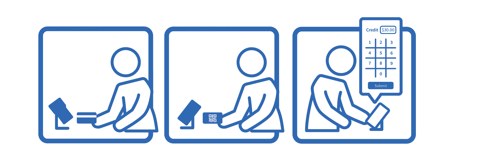

App Scanner Integration Guidelines
This document is to supply guidelines around an integration of third party scanners for ReUp's custom mobile payment and loyalty apps. It is aimed to discuss overall user interface flow and business logic.
In the context of this document, an App refers to a ReUp mobile payments and loyalty iOS or Android app.
In the context of this document, the Customer refers to an App user. The Customer has already downloaded the Vendor's app, connected a payment method, and, if live pay is disabled, load credit onto their app.
In the context of this document, a Vendor represents a store owner or clerk who is responsible for taking their customer's order. They will be the primary user of the Scanner.
In the context of this document, a Scanner refers to the application which scans an App to perform a transaction. A Vendor's Customer presents one of their App's QR codes to be scanned with the Scanner. Context is built into the QR code determining what action the scanner should take. To complete the transaction, the Scanner is to reach out to the ReUp Scanner API, found here.
App Credit Only
The role of the Scanner in an App credit only transaction is to allow the Customer to use their App credit (or in the case of Live Pay, their connected payment method) to purchase goods in store.
An App credit only transaction should consist of the following interactions:

-
Customer's order is taken
- Customer communicates their order to the Vendor
- Vendor inputs their order on the point of sale
- Vendor communicates the total amount to the Customer
-
Customer presents App for payment
- Customer navigates to the Use Credit feature on their App
- Customer presents the Use Credit QR Code
- Vendor scans the QR code with their Scanner
-
Vendor executes transaction
- If the POS and Scanner are not integrated, the Vendor inputs the total dollar amount on the Scanner.
- Scanner performs the UseCredit method on the ReUp Scanner API
- If the transaction is a success, the purchase has been paid for and the Vendor should now supply the Customer with their order.
- If the transaction fails, the Vendor should communicate this to the Customer by supplying their current credit amount compared to how much the goods cost.
During each step above, the Vendor should be supplied with sufficient and very obvious information about the transaction, so they can properly communicate that to the Customer.
App Reward Only
The role of the Scanner in a reward only transaction is to allow the Customer to redeem their App points for predetermined goods or discounts in store.
An App reward only transaction should consist of the following interactions:
-
Customer's order is taken
- Customer communicates their order to the Vendor
- Vendor inputs their order on the point of sale
- A product linked with the intended reward should be on the invoice
-
Customer requests to redeem a reward
- Customer navigates to the Redeem Reward feature on their App
- Customer selects the intended reward from the list
- Customer presents the Redeem Reward QR Code
- Vendor scans the QR code with their Scanner
- If the POS and Scanner are integrated, the Vendor passes the reward and invoice to the ReUp Scanner API via EvaluateReward and applies a negative line item representing one of the returned Qualified Discounts.
-
Vendor executes transaction
- When the Customer is ready to pay, the Scanner redeems the reward by calling the RedeemReward method in the ReUp Scanner API
- If the transaction is a success, the points have been decremented and the Customer can now pay the Vendor for the rest of the invoice if needed.
- If the transaction fails, the Vendor should communicate this to the Customer by supplying their current points amount compared to how much the reward costs.
In the case where goods are not linked to ReUp rewards (ie EvaluateReward is not called), the Vendor must have knowledge of exactly what goods are to be redeemed for. Reward redemptions are limited to one per invoice.
App Reward + Credit
The role of the Scanner in an App reward + credit transaction is to allow the Customer to redeem their App points for predetermined goods or discounts and pay for the rest of their invoice with their App.
An App reward + credit transaction should consist of the following interactions:
-
Customer's order is taken
- Customer communicates their order to the Vendor
- Vendor inputs their order on the point of sale
- A product linked with the intended reward should be on the invoice
-
Customer requests to redeem a reward
- Customer navigates to the Redeem Reward feature on their App
- Customer selects the intended reward from the list
- Customer presents the Redeem Reward QR Code
- Vendor scans the QR code with their Scanner
- If the POS and Scanner are integrated, the Vendor passes the reward and invoice to the ReUp Scanner API via EvaluateReward and applies a negative line item representing one of the returned Qualified Discounts.
-
Customer presents App for payment (optional if the POS and Scanner are integrated)
- Customer navigates to the Use Credit feature on their App
- Customer presents the Use Credit QR Code
- Vendor scans the QR code with their Scanner
-
Vendor executes transaction
- When the Customer is ready to pay, the Scanner redeems the reward by calling the RedeemReward method in the ReUp Scanner API
- If the transaction is a success, the points have been decremented and the Customer has redeemed for the reward.
- If the transaction fails, the Vendor should communicate this to the Customer by supplying their current points amount compared to how much the reward costs.
- If the POS and Scanner are not integrated, the Vendor inputs the total dollar amount minus the reward cost on the Scanner.
- Scanner performs the UseCredit method on the ReUp Scanner API.
- If the transaction is a success, the purchase has been paid for and the Vendor should now supply the Customer with their order.
- If the transaction fails, the Vendor should communicate this to the Customer by supplying their current credit amount compared to how much the goods cost.
In the case where goods are not linked to ReUp rewards (ie EvaluateReward is not called), the Vendor must have knowledge of exactly what goods are to be redeemed for. Reward redemptions are limited to one per invoice. For the case of when the Scanner is integrated with the POS, it is possible to do this transaction with only one scan, since the Redeem Reward QR Code holds sufficient information to do both transactions.
Check In Only
The role of the Scanner in an App check in only transaction is to allow the Customer to collect points on a purchase without using their App to pay.
An App check in only transaction should consist of the following interactions:
-
Customer's order is taken
- Customer communicates their order to the Vendor
- Vendor inputs their order on the point of sale
- Vendor communicates the total amount to the Customer
-
Customer presents App for check in
- Customer navigates to the Check In feature on their App
- Customer presents the Check In QR Code
- Vendor scans the QR code with their Scanner
-
Vendor executes transaction
- The Customer pays for their goods however they like.
- If the POS and Scanner are not integrated, the Vendor inputs the total dollar amount on the Scanner.
- Scanner performs the CheckIn method on the ReUp Scanner API
Note that this is to only be called during a points only transaction. Do not call the CheckIn method if the Customer is is paying with their App credit. However, if a Customer is only paying for a portion of an invoice with their App credit, please call CheckIn on the remainder.
App Pass Only
A ReUp pass allows Customers to purchase items in bulk and redeem for them at their own convenience. Think buying 10 coffees for the price of 8. The role of the Scanner in a pass only transaction is to decrement the quantity remaining on a Customer's pass so the Vendor can present the goods.
An App pass reward only transaction should consist of the following interactions:
-
Customer's order is taken
- Customer communicates their order to the Vendor
- Vendor inputs their order on the point of sale
- A product linked with the intended pass should be on the invoice
-
Customer requests to redeem a pass
- Customer navigates to the Redeem Pass feature on their App
- Customer selects the intended pass from the list
- Customer presents the Redeem Pass QR Code
- Vendor scans the QR code with their Scanner
- If the POS and Scanner are integrated, the Vendor passes the pass and invoice to the ReUp Scanner API via EvaluatePass and applies a negative line item representing one of the returned Qualified Discounts.
-
Vendor executes transaction
- When the Customer is ready to pay, the Scanner redeems the pass by calling the RedeemPass method in the ReUp Scanner API
- If the transaction is a success, the pass count has been decremented and the Customer can now pay the Vendor for the rest of the invoice if needed.
- If the transaction fails, the Vendor should communicate this to the Customer by telling them their pass has been depleted.
In the case where goods are not linked to a ReUp pass (ie EvaluatePass is not called), the Vendor must have knowledge of exactly what goods are to be redeemed for. Pass redemptions are limited to one per invoice.
Add Credit To Gift Card
The role of the Scanner here is to identify the Customer, and when the Vendor takes payment, the Scanner then adds the dollar amount onto the gift card.
Adding credit to a gift card should consist of the following interactions:

-
Customer's pays for the desired amount of credit
- Customer communicates their total amount to the Vendor
- Vendor inputs their order on the point of sale
- Vendor takes payment for the total amount
-
Customer reveals the gift card QR code (optionally, the Vendor could supply a brand new gift card)
- Vendor scans the Gift Card QR Code with the Scanner
- Scanner gets the gift card info by calling GetGCUser
- Vendor is shown all gift card info and can communicate it to the Customer
-
Vendor adds credit to gift card
- If the Scanner is not integrated with the POS, Vendor inputs dollar amount into the Scanner
- Scanner performs AddCreditGiftCard method on the ReUp Scanner API
Gift cards earn points just like any App user.